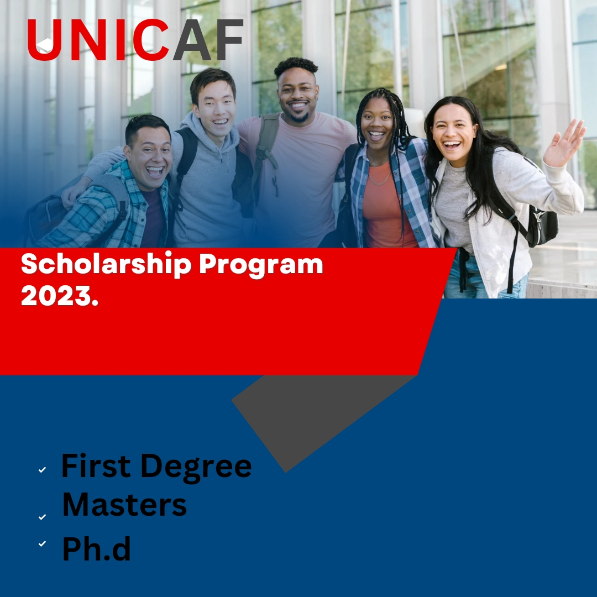

UNICAF SCHOLARSHIP PROGRAM 2023/2024: UNLEASHING YOUR EDUCATIONAL DREAMS
.jpg)
PREFACE:
The Unicaf Scholarship Program is a lamp of stopgap for innumerous individualities around the world who dream of pursuing advanced education. Unicaf, short for" University of Nicosia and Cambridge Education through Unicaf," is an association devoted to making quality education accessible to all. In this composition, we will claw into the details of the [Unicaf Scholarship](https://apply.unicaf.org/refer-a-friend/en?refcode=O6Mexyz6KI), understanding what it is, its significance, and how you can profit from this remarkable occasion.
WHAT IS THE UNICAF SCHOLARSHIP PROGRAM?:
Unicaf Scholarship is a lifeline for scholars looking to achieve their academic pretensions without the burden of extravagant education freights. It's a unique action that brings together prestigious universities and institutions to give affordable education. Unicaf mates with institutions similar as the University of Nicosia, the University of South Wales, and more, offering a range of programs from undergraduate to postgraduate situations.
THE SIGNIFICANCE OF UNICAF SCHOLARSHIP:
Accessible Quality Education:
Unicaf's primary thing is to make quality education accessible to a wider followership. It situations the playing field by enabling individualities who might not have the fiscal means to attend prestigious universities to pierce world- class education.
Diverse Course Immolations:
The Unicaf Scholarship covers a broad diapason of academic disciplines, from business and healthcare to humanities and social lores. This diversity ensures that there is a program for nearly every field.
Global Recognition:
Partnering with reputed institutions ensures that your degree carries weight in the professional world. It opens doors to a global network of alumni and openings.
Financial Relief:
The education significantly reduces the fiscal burden on scholars, making it a cost-effective way to attain a degree from estimable institutions.
HOW TO PROFIT FROM THE UNICAF SCHOLARSHIP:
Exploration and Choose a Program:
Start by probing the programs offered under the Unicaf Scholarship. Find the bone that aligns with your career bournes and interests.
Check Eligibility:
Insure you meet the education's eligibility criteria. Generally, Unicaf literacy are open to scholars who demonstrate academic implicit and fiscal need.
Operation Process:
The operation process generally involves submitting applicable documents, including academic reiterations and a particular statement. Pay close attention to deadlines and conditions.
Review the Funding Options:
Unicaf offers colorful backing options, including full literacy and partial literacy. Explore the backing options available for your chosen program.
CONCLUSION:
Conclusively the Unicaf Scholarship isn't just education; it's a gateway to realizing your educational dreams. It removes the fiscal walls that frequently hamper individualities from pursuing advanced education.
With a wide range of programs, global recognition, and different hookups, the Unicaf Scholarship empowers you to shape your academic trip and future career. Do not let fiscal constraints hold you back; explore the openings the Unicaf Scholarship offers and take the first step towards a brighter future.
Summarily, the Unicaf Scholarship is a game- changer in the world of education, furnishing an affordable path to high- quality academic programs. However, the Unicaf Scholarship is a gateway worth considering, If you are looking to advance your education and expand your midairs.
ACCESSING QUALITY EDUCATION 2023: Examples of Courses and Institutions Under the Unicaf Scholarship Program:
.jpg)
INTRODUCTION:
The Unicaf Scholarship stands as a beacon of opportunity for those who yearn for quality education but are often held back by financial constraints. In this comprehensive article, we will embark on a journey to explore the Unicaf Scholarship, focusing on the courses and institutions that exemplify its commitment to accessible, high-quality education.
UNRAVELING THE UNICAF SCHOLARSHIP:
Derived from the fusion of "University of Nicosia and Cambridge Education through Unicaf," the Unicaf Scholarship is a potent force in the world of education. Its mission is to break the chains that tie aspiring students to the weight of tuition fees, making exceptional education attainable. Unicaf has strategically partnered with esteemed institutions such as the University of Nicosia, the University of South Wales, and others, offering a plethora of academic programs, spanning from undergraduate to postgraduate levels.
THE UNICAF SCHOLARSHIP: An Academic Mosaic:
1. Business and Management Courses:
Unicaf's commitment to excellence in business and management education is evident in a wide range of programs. From Bachelor's degrees in Business Administration to Master's programs in Business Management, the scholarship serves as a gateway to unlocking leadership potential.
2. Healthcare and Nursing Programs:
The healthcare sector beckons with its noble calling, and Unicaf answers with a multitude of programs. Aspiring nurses can pursue BSc in Nursing and MSc in Nursing, while healthcare administrators can explore opportunities in Health Management.
3. Humanities and Social Sciences:
For the minds driven by a passion for social change, Unicaf opens doors to the humanities and social sciences. Programs like BA in English Language and Literature, BA in Psychology, and MSc in International Relations are among the myriad options.
4. Computer Science and Information Technology:
The digital age demands tech-savvy professionals. Unicaf steps in with programs like BSc in Computer Science, MSc in Information Systems, and MSc in Web Design and Development.
INSTITUTIONS SHAPING YOUR FUTURE:
1. University of Nicosia:
Renowned for its innovative approach to education, the University of Nicosia offers a multitude of programs in various fields, including business, health sciences, and the humanities. It's a citadel of knowledge with global recognition.
2. University of South Wales:
As a prominent institution with a strong commitment to academic excellence, the University of South Wales collaborates with Unicaf to provide opportunities for students to excel in fields such as business, healthcare, and technology.
BENEFITS OF UNICAF SCHOLARSHIP:
1. Financial Relief:
The Unicaf Scholarship significantly reduces the financial burden of pursuing higher education. This means that students can access top-tier programs without incurring the overwhelming costs often associated with quality education.
2. Global Network:
Through partnerships with renowned institutions, Unicaf scholars become part of a global network of alumni. This network can be a valuable asset for future career prospects.
3. Diverse Program Offerings:
Unicaf's diverse range of academic disciplines ensures that there is a program for every passion and interest. This diversity accommodates a wide array of career aspirations.
CONCLUSION:
The Unicaf Scholarship not only brings the dream of quality education within reach but also paves the way for a bright future. It transcends borders and financial constraints, providing opportunities to those who yearn for knowledge. By highlighting courses and institutions, Unicaf showcases its commitment to transforming lives through education. If you have ever wondered about accessing quality education, let the Unicaf Scholarship be your guide—a passport to a world of opportunities and a brighter tomorrow.
In conclusion, the Unicaf Scholarship is more than just financial support; it's a pathway to an enriched academic journey. By offering a diverse range of courses and forging partnerships with esteemed institutions, Unicaf empowers individuals to unlock their full potential. Your dream of quality education is no longer a distant reality; it's an achievable aspiration with the Unicaf Scholarship.
DIVERSE COURSE IMMOLATIONS OF UNICAF SCHOLARSHIP 2023

Introduction:
The UNICAF Scholarship Program has been designed to help in unlocking the World of Diverse Educational Opportunities, the Program has become synonymous with the democratization of education, bringing a plethora of diverse course immolations to the fingertips of aspiring scholars worldwide.
UNICAF, which stands for the University of Nicosia and Cambridge Education, has carved a unique niche in the world of scholarships, encompassing a wide spectrum of courses that cater to the aspirations of students across the globe. In this article, we embark on a journey to explore the wealth of educational possibilities offered under the UNICAF Scholarship Program.
Understanding the UNICAF Scholarship Program
At its core, the UNICAF Scholarship Program is a beacon of hope for individuals yearning to broaden their intellectual horizons. Established through a partnership between the University of Nicosia and Cambridge Education, it aspires to make quality education accessible and affordable for everyone, regardless of geographical or financial constraints. The program's underlying philosophy revolves around the belief that education knows no boundaries.
Diversity in UNICAF Scholarship Offerings:
What sets the UNICAF Scholarship Program apart is the sheer diversity of courses it provides. Whether your passion lies in the fields of business, healthcare, technology, or humanities, UNICAF has something to offer. The program boasts a rich tapestry of courses that cater to an array of academic interests and career aspirations. This diversity is a testament to the program's commitment to inclusivity, ensuring that students can pursue their passions without compromise.
A Glimpse into UNICAF Scholarship Course Immolations:
One of the program's most significant advantages is the comprehensive range of courses available. Aspiring scholars can choose from a wealth of undergraduate and postgraduate programs. From Bachelor's degrees in Business Administration to Master's degrees in Public Health, there is no shortage of opportunities. This flexibility enables students to tailor their educational journey to their unique goals.
UNICAF Scholarship Global Reach and Impact:
UNICAF's impact transcends geographical borders. Its reach extends to students in various corners of the world, creating a global network of scholars. This internationalization of education facilitates a rich exchange of ideas, experiences, and cultures, enriching the educational landscape and broadening students' horizons.
UNICAF Scholarship Application Process and Eligibility:
Securing a UNICAF scholarship is a straightforward process. Prospective scholars need to meet specific eligibility criteria, which typically include academic qualifications and financial need. The application process is user-friendly, ensuring that deserving candidates can access this opportunity without unnecessary hurdles.
Conclusion:
In conclusion, the UNICAF Scholarship Program embodies the spirit of educational inclusivity. It embraces the diversity of academic pursuits, providing an extensive array of courses that cater to students from all walks of life. This program stands as a beacon of hope for those seeking to transform their lives through education. Through its global reach, it fosters a community of scholars united by a thirst for knowledge. In a world where access to education can be limited, the UNICAF Scholarship Program offers a pathway to diverse and life-changing educational immolations. It's a testament to the belief that education is the key to unlocking a brighter future for all.
UNICAF SCHOLARSHIP 2023: Global Recognition

Introduction:
In an era where access to quality education is increasingly regarded as a universal right, UNICAF Scholarships have emerged as a global recognition of the power of education to transform lives. UNICAF, short for the University of Nicosia and Cambridge Education, stands as a beacon of hope for students worldwide. This article embarks on a journey to explore the global recognition garnered by UNICAF Scholarships, showcasing how it has transcended borders to empower students from diverse backgrounds.
The Essence of UNICAF Scholarships:
At its core, UNICAF Scholarships is a testament to the belief that education should know no boundaries. Established through a dynamic partnership between the University of Nicosia and Cambridge Education, this scholarship program seeks to bridge the gap between aspiration and attainment. It aims to make quality education accessible and affordable, ensuring that deserving students can pursue their dreams without financial constraints.
UNICAF SCHOLARSHIP PROGRAM'S: Recognized Excellence in Education:
UNICAF Scholarships have earned global recognition for their commitment to academic excellence. The program partners with reputable universities and institutions worldwide, ensuring that students have access to courses and qualifications that are internationally recognized. This recognition extends to the quality of education provided, making it a preferred choice among students.
UNICAF SCHOLARSHIPS: A Worldwide Impact:
The influence of UNICAF Scholarships reaches far and wide, transcending geographical boundaries. With a global network of partner universities and a diverse student body, the impact of this program stretches to every corner of the world. It has created a global community of scholars, fostering cross-cultural exchanges and expanding horizons.
UNICAF SCHOLARSHIPS ENABLING AFFORDABLE EDUCATION FOR ALL
One of the primary reasons for the global recognition of UNICAF Scholarships is their commitment to affordability. By providing scholarships to students in need, it breaks down financial barriers to education. This inclusivity ensures that no deserving student is left behind due to a lack of resources.
UNICAF SCHOLARSHIP: Enabling Career Advancement.
UNICAF Scholarships not only open doors to quality education but also offer a pathway to career advancement. Graduates of UNICAF programs are recognized by employers globally for their skill set and knowledge. This recognition leads to enhanced job prospects and career development.
Conclusion:
In conclusion, UNICAF Scholarships have earned their place on the global stage of education. They symbolize the recognition of the fundamental principle that education should be accessible to all, regardless of their background or location. This scholarship program, founded on the partnership between the University of Nicosia and Cambridge Education, has become a beacon of hope for countless students seeking to transform their lives through education. The global recognition it has achieved, both for the quality of education and the impact it creates, cements its place as a powerful force for positive change in the world.
UNICAF Scholarships are not just about access to education; they represent a recognition of the transformative power of learning, the potential of individuals, and the importance of a globally connected community of scholars. As the world continues to change and evolve, UNICAF Scholarships remain at the forefront of global recognition for their unwavering commitment to education and empowerment.
FINANCIAL RELIEF FROM UNICAF SCOLARSHIP 2023.
Introduction:
In today's world, where the pursuit of higher education often comes with a hefty price tag, the UNICAF Scholarship emerges as a beacon of hope, offering a lifeline to students seeking financial relief to achieve their academic dreams. UNICAF, an acronym for the University of Nicosia and Cambridge Education, has taken upon itself the noble task of making quality education accessible and affordable.
In this article, we will explore how the UNICAF Scholarship provides much-needed financial relief to students around the globe.
Understanding UNICAF Scholarship:
The UNICAF Scholarship is a testament to the idea that education should not be a privilege but a universal right. Established through a dynamic partnership between the University of Nicosia and Cambridge Education, this program aims to bridge the gap between ambition and accomplishment. It seeks to ensure that quality education is within reach for those who aspire to achieve it.
Relief Through Affordability:
The primary way in which the UNICAF Scholarship provides financial relief is through affordability. It addresses one of the most significant barriers to higher education by offering scholarships to deserving students. These scholarships significantly reduce the financial burden associated with obtaining a degree.
Diverse Course Immolations:
UNICAF Scholarships not only provide relief through financial assistance but also through a diverse range of courses. Students have the freedom to choose from various academic fields, aligning their education with their passions and career aspirations. This diversity ensures that students can receive a tailored education that suits their individual goals.
Global Reach and Local Impact:
UNICAF Scholarship has global recognition and reach. It connects with students from different parts of the world, creating a global community of scholars. This not only enriches the educational experience but also makes a local impact by fostering cultural exchanges and knowledge sharing.
Empowering the Future:
Financial relief is only one aspect of the UNICAF Scholarship. The program empowers students to take control of their future. It equips them with the knowledge and skills needed to achieve their dreams and make a difference in their communities.
Conclusion:
In conclusion, the UNICAF Scholarship represents a glimmer of hope for students navigating the complex landscape of higher education costs. It offers not just financial relief but the promise of a brighter future. With its diverse course immolations, global reach, and commitment to affordability, UNICAF is changing lives, one scholar at a time. It stands as a testament to the belief that education should be a force for good and that financial constraints should not limit one's access to knowledge.
UNICAF Scholarships are not just about providing financial relief; they are about unleashing the potential of individuals and communities. The program offers a pathway to empowerment, showing that the pursuit of knowledge can be a journey free from financial worries. As the world continues to evolve, the UNICAF Scholarship remains a steadfast partner on the journey to a brighter, more educated future.
UNICAF SCHOLARSHIP EXPLORATION AND CHOOSE PROGRAM 2023.

Introduction:
Becoming a UNICAF Scholar is an exhilarating journey that opens doors to a world of opportunities. UNICAF, standing for the University of Nicosia and Cambridge Education, is committed to democratizing education by making it accessible and affordable. As you step into the realm of UNICAF Scholarships, the first crucial step is to embark on a voyage of exploration and choose a program that aligns with your academic aspirations and career goals. In this article, we will delve into the process of exploration and program selection, shedding light on how UNICAF Scholars can chart their path to success.
Understanding UNICAF Scholarships:
Before we embark on the journey of program selection, it's essential to comprehend the essence of UNICAF Scholarships. These scholarships are not just a means of financial relief; they represent the belief that education should be accessible to all. Established through a dynamic partnership between the University of Nicosia and Cambridge Education, UNICAF Scholarships are designed to bridge the gap between aspiration and accomplishment.
Exploration of Academic Interests:
The first step in choosing a program is exploration. As a UNICAF Scholar, you have the opportunity to explore a diverse range of academic fields. Begin by assessing your academic interests and passions. What subject matter excites you the most? Consider your long-term goals and how a specific program aligns with your ambitions.
Course Offerings and Specializations:
UNICAF Scholarships offer a wide array of courses and specializations. Explore the course catalog to understand the different programs available. Consider factors such as the curriculum, course duration, and the specific skills and knowledge you wish to acquire.
Matching Your Career Goals:
Choosing a program should not only be about your academic interests but also about your career goals. Explore how each program aligns with your professional aspirations. Consider the potential for career advancement and the practical skills you will gain.
Program Flexibility and Learning Style:
UNICAF Scholarships provide flexibility in terms of program delivery. Some programs may be offered online, while others may be conducted on-campus. Explore which learning style suits you best. You may need to also consider taking into account your schedule and personal preferences.
Admission and Eligibility:
Before finalizing your choice, explore the admission requirements and eligibility criteria for your selected program. Ensure that you meet the necessary prerequisites and can successfully gain admission.
Conclusion:
In conclusion, choosing a program as a UNICAF Scholar is an exciting and transformative process. It's a journey of exploration, self-discovery, and aligning your academic and career goals. UNICAF Scholarships offer a diverse array of opportunities, and your choice of program can significantly impact your future.
As you embark on this path, remember that UNICAF Scholarships are not just about obtaining a degree; they are about acquiring the knowledge, skills, and experiences that will shape your life and career. So, explore, choose wisely, and take the first step toward a brighter future as a UNICAF Scholar. Your journey of academic and personal growth begins with this pivotal decision.
UNICAF SCHOLARSHIP ELIGIBILITY CHECK 2023.

Introduction:
The UNICAF Scholarship, a gateway to quality education and academic empowerment, is a beacon of hope for countless aspiring students worldwide. However, before embarking on this journey, it is crucial to navigate the path of eligibility. UNICAF, an acronym for the University of Nicosia and Cambridge Education, is steadfast in its commitment to making education accessible to all, but it does require applicants to meet certain criteria.
In this article, we will thoroughly explore the UNICAF Scholarship eligibility check process, shedding light on the qualifications and steps required to embark on this transformative educational journey.
Understanding UNICAF Scholarships:
Before delving into the eligibility check, it's essential to comprehend the essence of UNICAF Scholarships. These scholarships are a testament to the belief that education should be a universal right, not a privilege. Established through a dynamic partnership between the University of Nicosia and Cambridge Education, UNICAF Scholarships aim to bridge the gap between aspiration and accomplishment, making quality education within reach.
Eligibility Criteria Overview:
The UNICAF Scholarship program has specific eligibility criteria that applicants must meet to be considered for the scholarship. It's vital to familiarize yourself with these criteria, which typically include academic qualifications, financial need, and sometimes, specific program requirements.
Academic Qualifications:
One of the primary factors in the eligibility check is academic qualifications. UNICAF Scholarships usually require applicants to have a certain level of educational background, such as a high school diploma for undergraduate programs or a bachelor's degree for postgraduate programs.
Financial Need Assessment:
Financial need is another crucial aspect of eligibility. UNICAF Scholarships are often designed to provide assistance to students who face financial constraints in pursuing higher education. The eligibility check may involve assessing your financial situation to determine your need for the scholarship.
Program-Specific Requirements:
In some cases, specific programs under the UNICAF Scholarship may have additional requirements. For instance, certain postgraduate programs may require relevant work experience or prior qualifications in a related field.
Application Process and Checklist:
To undergo the UNICAF Scholarship eligibility check, applicants must complete the application process. This typically involves submitting required documents, filling out application forms, and ensuring that you meet all the specified criteria. It's essential to follow the application checklist diligently.
Conclusion:
In conclusion, the UNICAF Scholarship eligibility check is a crucial step on the path to educational empowerment. It ensures that scholarships are awarded to deserving students who meet the specified criteria. UNICAF Scholarships represent more than just financial assistance; they represent the opportunity to transform one's life through education.
As you consider embarking on this journey, remember that UNICAF Scholarships are about making education accessible to all and about opening doors to a brighter future. By understanding the eligibility criteria and following the application process diligently, you can take the first step toward seizing this incredible opportunity to pursue quality education and achieve your academic and career aspirations.
UNICAF SCHOLARSHIP OPERATION PROCESS 2023

Introduction:
The UNICAF Scholarship program, a gateway to affordable and quality education, holds the promise of transforming the lives of countless students around the world. To embark on this transformative journey, understanding the UNICAF Scholarship operation process is essential.
UNICAF, representing the University of Nicosia and Cambridge Education, is committed to making education universally accessible. In this article, we will delve into the intricate operation process behind UNICAF Scholarships, shedding light on the steps, intricacies, and how this program brings education within reach.
Demystifying UNICAF Scholarships:
Before we explore the operation process, it's vital to grasp the essence of UNICAF Scholarships. These scholarships are a testament to the belief that quality education should be a right, not a privilege. Founded through the dynamic collaboration between the University of Nicosia and Cambridge Education, UNICAF Scholarships aim to bridge the gap between aspiration and achievement, making education accessible.
Application and Eligibility Check:
The first step in the UNICAF Scholarship operation process involves the application. Prospective scholars must submit applications, which are then subjected to a rigorous eligibility check. The eligibility criteria typically include academic qualifications, financial need assessment, and sometimes program-specific requirements.
Evaluation and Scholarship Award:
Once the applications have undergone the eligibility check, they proceed to the evaluation stage. A thorough assessment of academic qualifications, financial need, and other requirements is carried out. Scholarships are then awarded to deserving students based on this evaluation.
Program Selection and Enrollment:
After receiving the scholarship, scholars proceed to select their desired programs. UNICAF Scholarships offer a diverse range of academic fields. Once the program is chosen, the scholar enrolls in the University of Nicosia or a partner institution to commence their educational journey.
Academic Progress and Support:
Throughout their academic journey, UNICAF Scholars receive support and guidance. The program is designed to assist students in achieving their academic goals. This support may include mentorship, academic resources, and access to a global network of scholars.
Graduation and Beyond:
The UNICAF Scholarship operation process culminates with graduation. Scholars who have successfully completed their programs are equipped with the knowledge and skills needed to pursue their career aspirations. Beyond graduation, UNICAF Scholars become part of a global community of educated individuals, each with the potential to make a significant impact.
Conclusion:
In conclusion, the UNICAF Scholarship operation process is a comprehensive journey that begins with the application and eligibility check and extends to program selection, academic progress, and ultimately, graduation. UNICAF Scholarships represent more than just financial aid; they represent an opportunity for transformation through education.
As you consider embarking on this journey, remember that UNICAF Scholarships are about making education accessible and empowering individuals to shape their future. By understanding and navigating the operation process, students can seize the opportunity to pursue quality education, achieve their academic goals, and make a lasting impact on their communities and the world.
UNICAF SCHOLARSHIP REVIEW AND FUNDING OPTIONS 2023
Introduction:
The UNICAF Scholarship program, a symbol of accessible and quality education, stands as a beacon of hope for countless students seeking financial relief and academic empowerment.
In this article, we will conduct a comprehensive review of the UNICAF Scholarship program while exploring the diverse funding options it offers. UNICAF, derived from the collaboration between the University of Nicosia and Cambridge Education, remains committed to breaking down the barriers to education and fostering a world where knowledge knows no bounds.
Unveiling UNICAF Scholarships:
Before diving into the review and funding options, it's essential to uncover the essence of UNICAF Scholarships. These scholarships embody the belief that quality education should be accessible to all. Established through a dynamic partnership between the University of Nicosia and Cambridge Education, UNICAF Scholarships endeavor to bridge the gap between aspiration and accomplishment.
Reviewing the Scholarship Criteria:
In the journey of UNICAF Scholarships, one must first review the scholarship criteria. These criteria often include academic qualifications, financial need assessment, and program-specific requirements. Understanding the criteria is the first step toward securing funding for your education.
Exploring the Range of Programs:
UNICAF Scholarships offer a diverse array of academic fields, from undergraduate to postgraduate levels. Scholars have the opportunity to explore the entire spectrum of programs to find the one that aligns with their passions and career goals. This diversity enriches the educational journey.
Financial Relief Through Scholarships:
The primary focus of UNICAF Scholarships is to provide financial relief to deserving students. This relief significantly reduces the financial burden of higher education, making quality education accessible to a broader audience. Scholars receive the necessary support to achieve their academic goals.
Additional Funding Options:
In addition to traditional scholarships, UNICAF offers various funding options. These may include payment plans, discounts, and special partnerships with employers. Exploring these options can further alleviate financial constraints and make education attainable.
Academic Excellence and Networking:
UNICAF Scholars not only receive funding but also access to academic excellence. They are part of a global network of scholars who share experiences and knowledge. The networking opportunities expand horizons and create a rich and supportive community.
Conclusion:
In conclusion, the UNICAF Scholarship program is a testament to the belief that quality education should be within reach for all. The review of scholarship criteria and exploration of programs lay the foundation for accessing financial relief and a world of academic opportunities.
UNICAF Scholarships offer more than just funding; they offer a transformative educational experience. Through this program, individuals can break free from financial barriers, achieve academic excellence, and become part of a global community of educated individuals. The range of funding options ensures that every scholar has the opportunity to seize the power of knowledge and make a lasting impact.